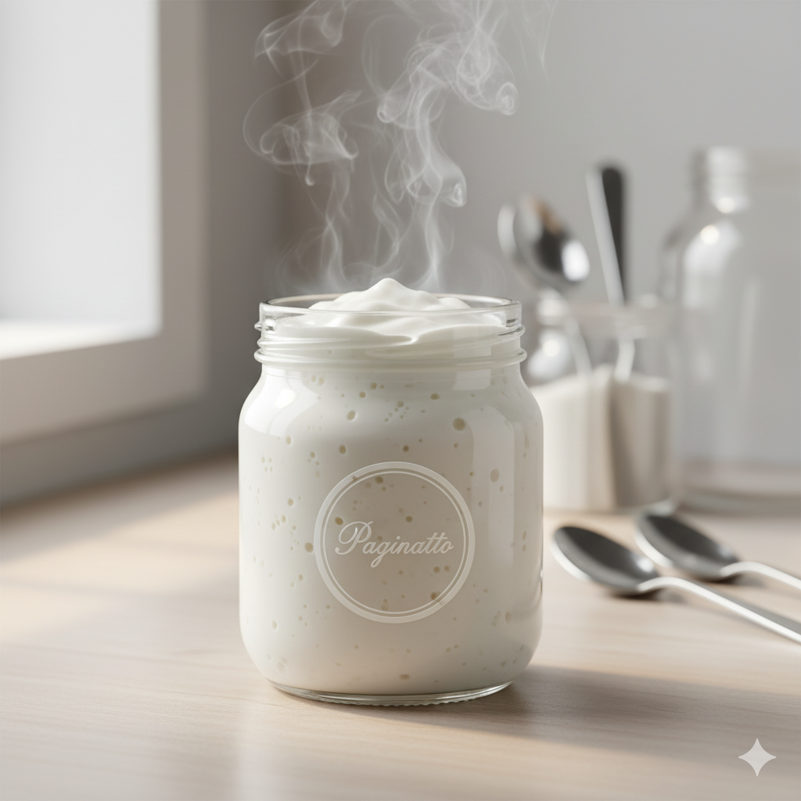
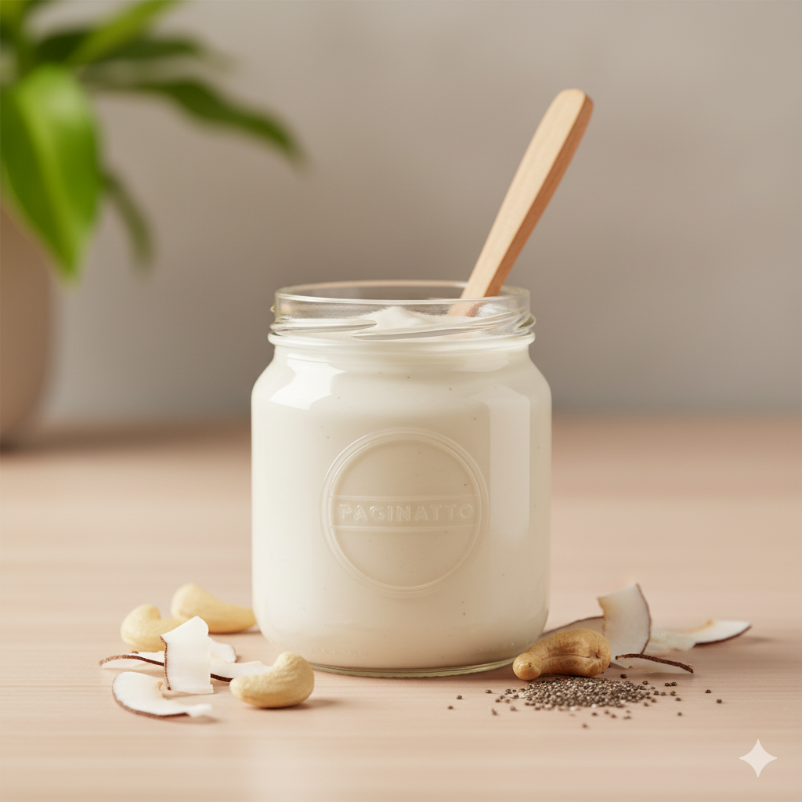
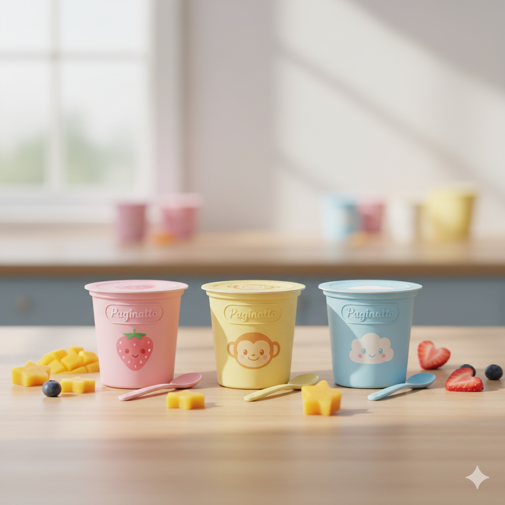

Categorías
Explora el mundo del yogur artesanal.
¡Accede a tus libros electrónicos aquí!
Descárgalos ahora y descubre secretos de grandes chefs.
Haz clic aquí para acceder a tus libros electrónicos.png)
Con frutas
Yogures con trozos y salsas naturales.

Probióticos
Fermentos y técnicas para una fermentación saludable.

Griego
Cremoso, intenso e irresistible.
Disponible mañana a partir de las 18:00

Vegano
Alternativas con leche vegetal y textura cremosa.
Disponible mañana a partir de las 18:00

Infantil
Recetas suaves, sabrosas y nutritivas para los más pequeños.
Disponible mañana a partir de las 18:00